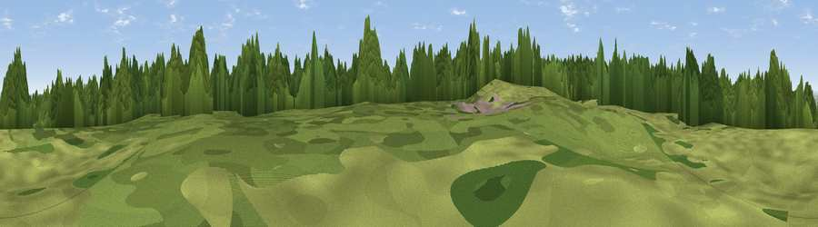

Ladycross Quarry Nature Reserve
#40270 in England · top 95% of its area beats it · near Slaley · path 127 mWhere it is
The exact computed spot (NY 95341 55124). Click the marker for map links.
Public access: the nearest public right of way is about 127 m away — the final stretch may cross private land. Computed from Natural England's CRoW access layer and OpenStreetMap rights of way — not the legal definitive map. Always verify locally.
The view, rendered

A 360° render of this exact spot computed from the terrain model, tree cover and land cover — summer colours, afternoon light, calibrated against photographs of famous viewpoints. Real trees, hedges and buildings will differ in detail.
The panorama
Grey silhouette: terrain skyline in each direction (720 bearings, Earth curvature and refraction included). Dashed green: skyline with trees (+15 m) and buildings (+8 m) as obstacles. Blue strip: how far the ground is visible on each bearing.
Where the view opens
Wedge length = distance to the farthest visible ground on that bearing (vegetation-aware). Rings at 10, 25 and 50 km.
What fills the view
54% grassland · 34% woodland · 11% cropland ·
Angular shares of the visible panorama (visual magnitude), not map area. Landscape diversity 0.43 (0–1 Shannon).
Key numbers
More beautiful places nearby
The staircase of upgrades: each row has a higher view potential than everything closer. Driving times are estimates from straight-line distance, calibrated against real road routing — check an actual route before setting out.
| Place | Direction | Drive | Score |
|---|---|---|---|
| Viewpoint near Whitley Chapel | W · 1 km | ~3 min | 60.7 |
| Viewpoint near Blanchland | SSW · 2 km | ~5 min | 67.7 |
| Viewpoint near Slaley | E · 5 km | ~11 min | 69.8 |
| Viewpoint near Rookhope | S · 10 km | ~19 min | 70.4 |
| Viewpoint near Fourstones | NNW · 14 km | ~25 min | 71.4 |
| Collier Law | SSE · 15 km | ~26 min | 71.7 |
| Viewpoint near Allenheads | SW · 17 km | ~29 min | 74.6 |
| Pontop Pike | E · 20 km | ~34 min | 77.8 |
54.89084, -2.07416 · source: osm viewpoint · position refined by local search. Computed location — check access rights before visiting.